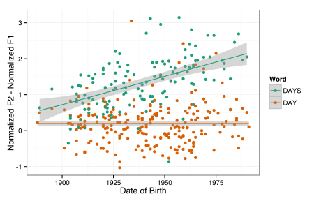

Vwl Systems
Josef Fruehwald
October 24, 2014
Intro
Questions and topics
- What happens to /uw/, /ow/ and /aw/ before /l/?
- How does this interact with these vowels fronting?
- What does this tell us about phonology and phonetic changes?
- Assorted loose ends.
What happens to /uw/, /ow/ and /aw/ before /l/?
“What’s really happening to short-a before L in Philadelphia?” (Dinkin, 2013)
- There is a close phonetic similarity of /awl/, /æl/ and /aw/ (Powel, pal, pow)
- /awl/ → [æ:l] (Tucker 1944)
- Apparent tensing of /æl/ is due to it merger to either /awl/ or /aw/
Making it more general
Both /owl/ and /uwl/ are blocked from fronting in Philadelphia
- Argument 1:
This is because they both also undergo monophthongization - Argument 2:
This is one phonological rule - Argument 3:
The phonological features selecting /aw/, /ow/ and /uw/ to undergo monopthongization before /l/ are the same that select them to all front
The data

Generalizing
Monophtongization
Vowel Trajectories
Monophthongization
Proposal:There is a generalized monophthongization process in the grammar.
- Vwl → V:l
Phonetic Parallism
Parallelism
Parallism
- Linguistic or social parallism? (Watt 2000)
Parallelism
Random Effects
Linguistc & Social Factors
Linguistic & Social Factors
Linguistic & Social Factors

Tying them together
“Features”
Set defining labels

- Phonology: Pick out members to undergo a phonological process
- Here: Monophthongization
- Phonetics: Defines a target phonetic realization
- Here, the diachronic fronting
Monophthongization and Fronting
Nucleus movement
Nucleus Movement
Non-complications and Complications
/uw/, /ow/ and /aw/ don’t always all front
Seems like there’s an implicational scale:
- if aw
- then ow and uw
- if ow
- then uw
- uw can front alone.
Phonological Natural Classes
- I would predict it would be impossible for just /ow/ to front, or only /ow/ not to front.
A real problem
A dialect where only /aw/ fronts, or only /aw/ and /ow/ front, but not /uw/ should be possible, but not attested?
- But maybe Philadelphian men fit the bill.
/uw/ fronts before /l/ in Manchester
- Maybe /l/ doesn’t have the same phonological effect on Manchester /uw/
- The phonology → phonetics mapping that’s changing in Manchester might be different from Philadelphia
No gull/goal or pull/pool merger
- Al~owl is pretty near-mergery anyway.
- It seems like /awl/ → [æ:l] potentiated merger of /æl/ to [æ:l]
Conclusions
Conclusions
- It’s good to take a systematizing eye to phonetic changes.
- Phonetic change isn’t commonly taken as evidence for how the phonology → mapping operates, but it’s a rich vein of evidence.